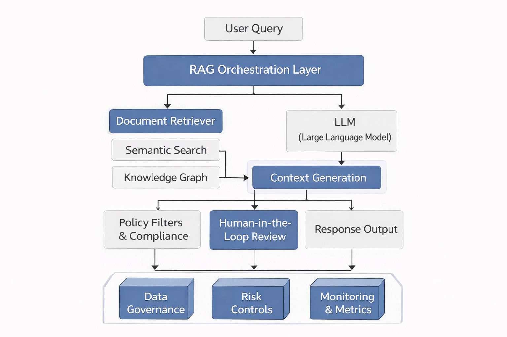
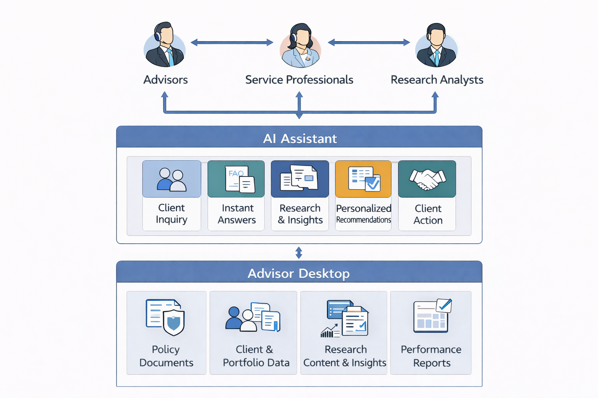
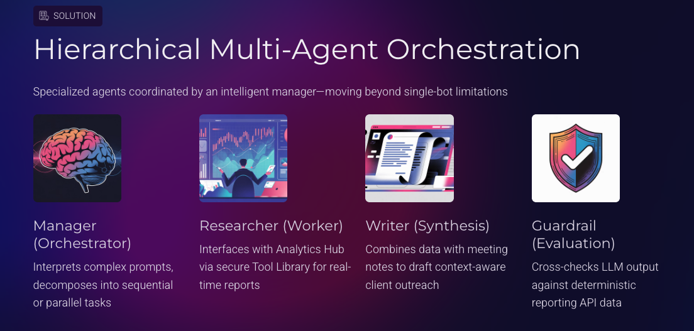
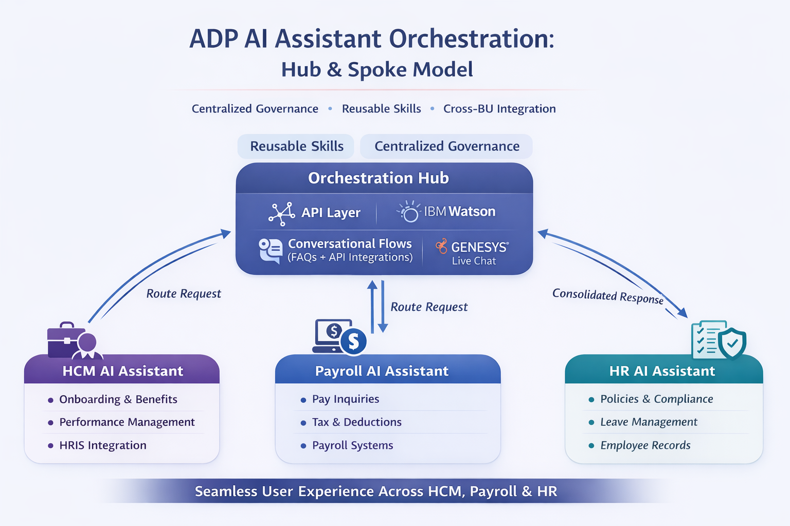
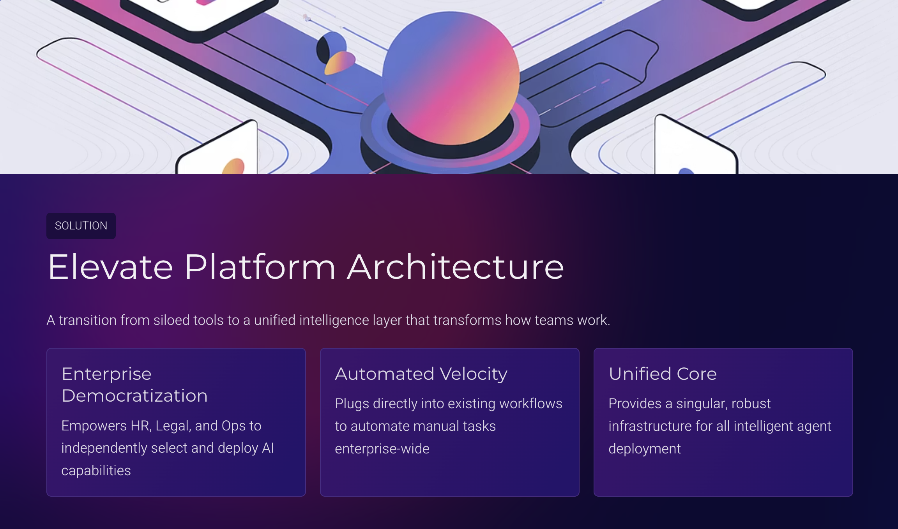

Why Optn × Why Me
Deal Intelligence
Meets AI Scale.
DealPath is a deal management platform for institutional real estate—a domain where workflow automation, data integrity, and intelligent decision support can generate outsized returns. This is precisely the intersection where I have spent the last 13+ years.
At Morgan Stanley, I industrialized AI platforms that manage hundreds of billions in client assets—turning raw financial data into advisor-ready intelligence for 25K financial advisors. The parallels to real estate deal management are direct: complex, high-stakes transactions; fragmented data sources; and users who need synthesis, not spreadsheets.
I bring a proven record of taking AI from pilot to production in regulated environments, building the governance and evaluation frameworks that make trust possible at enterprise scale.
Transferability Map
How my enterprise AI experience maps directly to the DealPath product surface.
Experience Relevance
Enterprise Platform PM — Translated to PropTech
A direct mapping of my most relevant work to the DealPath product domain.
Most Relevant Case Studies
Scroll horizontally to explore the work most applicable to DealPath.
Morgan Stanley
Enterprise RAG & Agentic Platform
Owned strategy and delivery for 5 AI assistants serving 25K financial advisors. Built production RAG pipelines with multi-stage retrieval, hybrid re-ranking, and G-Eval evaluation frameworks. Scaled from pilot to $15M annual savings opportunity with zero critical compliance incidents.
- GPT-4 RAG with semantic chunking and citation-led retrieval
- HITL governance for all AI-generated advisor outputs
- Multi-agent orchestration for report automation
- LLMOps: real-time cost, latency, and faithfulness monitoring


Strategic Vision
Beyond RAG: Agentic Deal Workflows
Architected the framework for moving from passive retrieval to autonomous agentic execution. The Hierarchical Orchestration pattern—Manager directing specialized Worker agents—maps directly to deal pipeline automation: intake → due diligence → IC memo generation → approval routing.
- Manager agent coordinates deal intake, research, and output agents
- Specialized agents for document extraction, comp analysis, risk flagging
- Human-in-the-loop checkpoints at IC and approval stages

ADP
Enterprise AI Orchestration & API Layer
Built the orchestration layer integrating IBM Watson NLU across HR, Payroll, and HCM products. Designed the API architecture enabling async, multi-channel AI workflows—directly analogous to DealPath's integration surface connecting LPs, brokers, and internal deal teams.
- NLU intent classification + entity extraction at enterprise scale
- Async messaging workflows reducing manual touchpoints 40%+
- API-first design enabling third-party data ingestion

Enterprise GenAI Platform Vision
Horizontal Self-Service AI Architecture
Designed the framework for transitioning from vertical AI silos to a horizontal, self-service platform—the same architectural shift DealPath needs to serve diverse investment strategies (core, value-add, opportunistic) without bespoke per-team builds.
- Centralized AI capabilities (models, retrieval, eval) shared across teams
- Configurable guardrails with team-level customization
- Unified cost, security, and compliance control plane

Product Thinking for DealPath
Where I'd Focus in the First 90 Days
Based on the institutional real estate deal lifecycle, here's how I'd prioritize building AI-native intelligence into DealPath's core workflow:
- AI-Powered Deal Intake & Scoring: Automate the top of funnel—ingest broker OMs, extract key deal parameters (cap rate, NOI, basis), and score against fund strategy criteria. Eliminate 80% of manual triage time.
- Contextual Comp Engine: Embed a RAG-based comparable-deal retrieval layer directly into the underwriting view. Surface the 5 most relevant closed transactions with one-click without leaving the deal record.
- Due Diligence Orchestration: Agent-driven task generation from PSA milestones—auto-create legal, environmental, and financial review tasks with assigned owners and deadline inference from contract dates.
- IC Memo Co-Pilot: LLM-assisted Investment Committee memo drafting that synthesizes deal data, risk flags, and comparable analysis into a structured first draft—reducing memo prep from days to hours.
- Portfolio-Level Deal Intelligence: Cross-deal analytics surface concentration risk, vintage distribution, and pipeline health for fund managers—turning DealPath from a workflow tool into a strategic intelligence layer.
How I Operate
PM Principles Relevant to DealPath's Stage
Build
Workflow-First, AI-Second
AI features only ship when they remove friction from an existing user workflow. I map the deal lifecycle end-to-end before identifying where intelligence adds the most value—not where it's technically possible.
Scale
Trust Through Governance
Institutional investors require auditability. I design HITL checkpoints and evaluation frameworks from Day 1—not as compliance afterthoughts—so AI outputs are traceable, reviewable, and trusted by IC.
Measure
ROI as the North Star
Every AI initiative I run has a measurable output: hours saved, error rate reduction, or deal velocity improvement. I instrument before I ship—so we know within 30 days whether a feature is delivering.